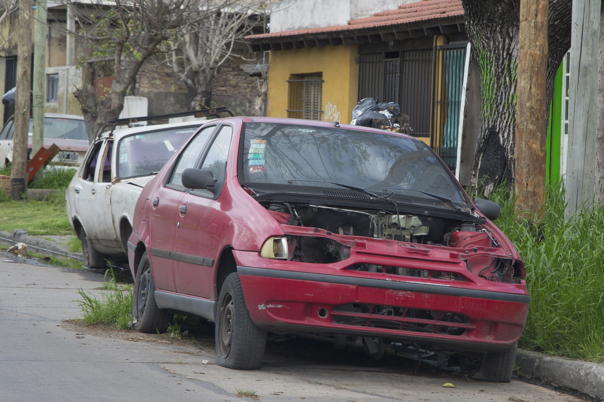
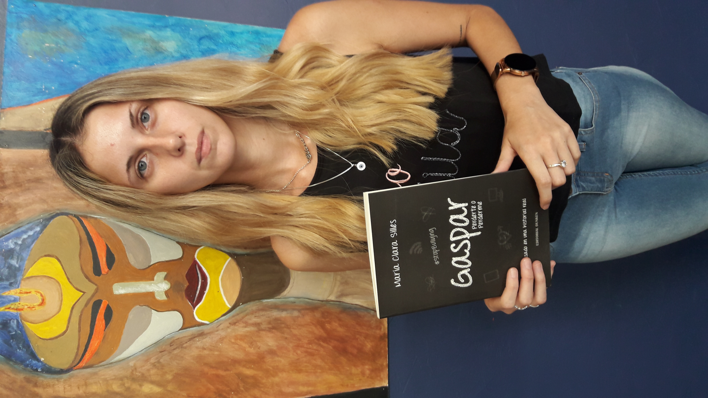
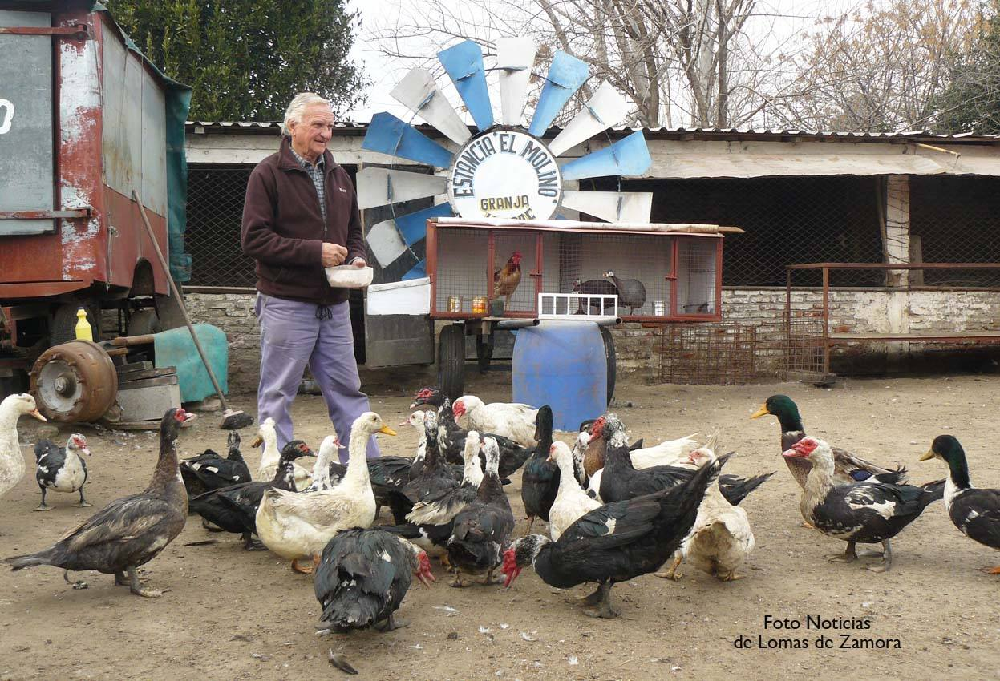
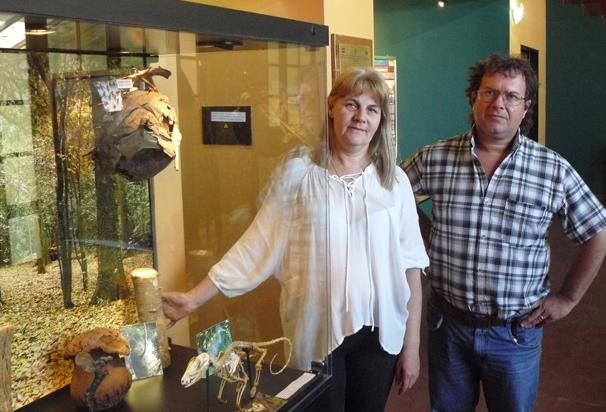
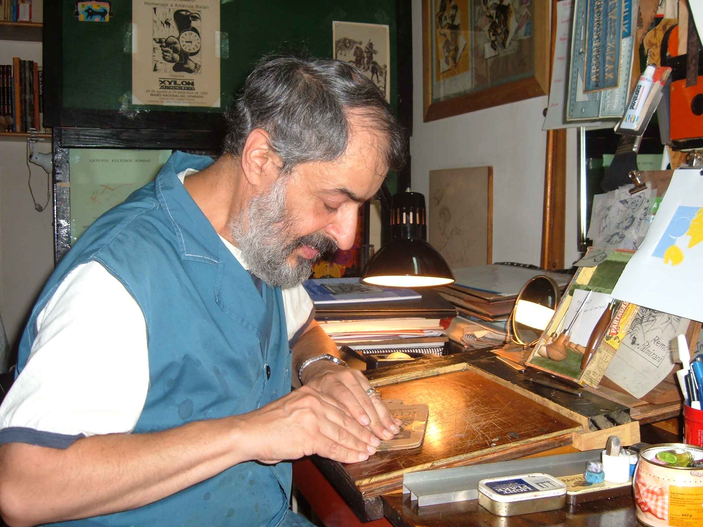

Sección
El arquero más divertido que tuvo Los Andes
Cuando estaban peloteando feo al equipo, Carlos López...

Sección
Cada vez hay más autos abandonados
Vecinos se comunicaron con este medio para denunciar que cada vez hay más automóviles...


Sección
Enfermera ejemplar de Terapia Intensiva del Gandulfo
Verónica Gorosito: “A pesar de los momentos tristes, sigo amando todo lo que hago”.

Sección
“Hay mucha gente mala ahí afuera…”
Maria Clara Silles cuenta en su libro “Gaspar, perderte o perderme”, la dura experiencia...

Sección
De aguatero a dueño de una granja
Lepore, un espacio de campo con mucha historia en Lomas de Zamora.

Sección
Lomas de Zamora 150 Años
Este libro abarca la historia del partido de Lomas de Zamora desde la etapa fundacional hasta nuestros días.
Sección
FUNCIONARIOS QUE FUNCIONAN:
HOY, ARMANDO MOGLIANI

Sección
Un Museo en medio del bosque de Santa Catalina
Un espacio verde para descubrir y disfrutar
